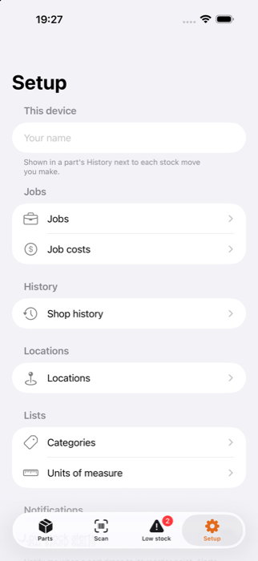
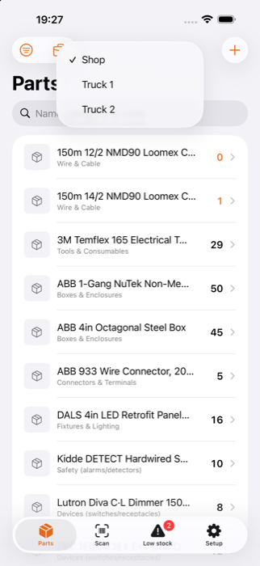
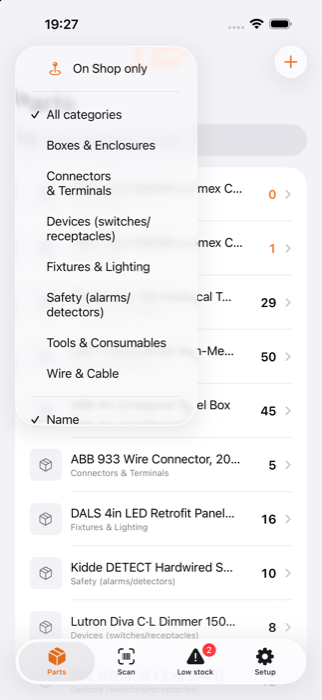
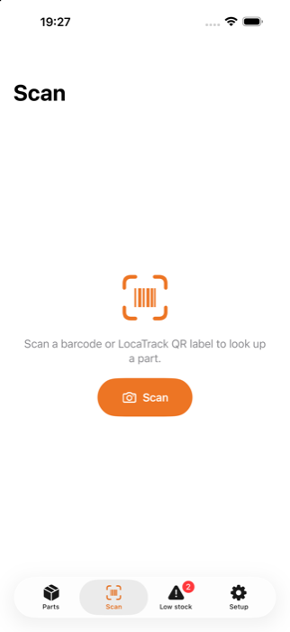
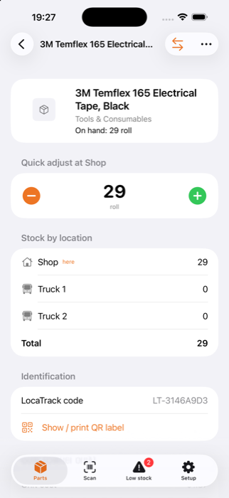
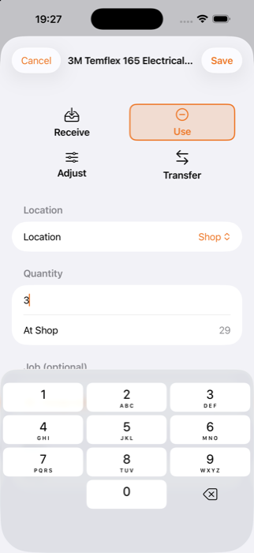
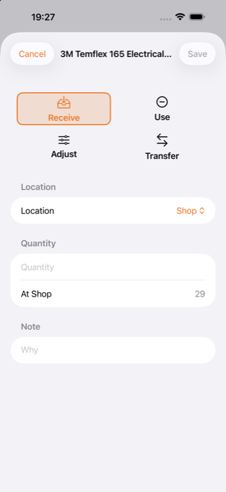
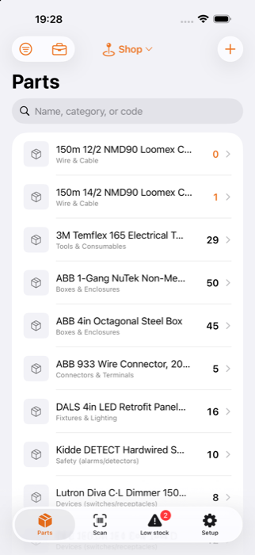
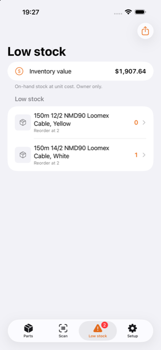

Every screen, every button, and why it works the way it does. Read it start to finish once, then keep it handy.
Each step says what to tap, what you'll see, and where there's a choice, which one to pick and why. No computer know-how needed.
Get LocaTrack on the App StoreLocaTrack uses a handful of words on purpose. Learn these and every screen makes sense.
One kind of thing you stock: a 20A breaker, a roll of 14/2. A Part is a description - name, photo, category - never a count.
The Shop, a Truck, or a Job site. Every count is "this many at this place."
How many of one Part are at one Location. You can't type it in. The app adds it up from the history.
One line in the history: received 10, used 3, moved 5, fixed a count. Stock is just the total of the Moves.
A named piece of work - "123 Main St". When you Use a part you can tag it to a Job so you know what the job cost.
A number an Owner sets per part. When the total across all places drops to it or below, the part lands on the Low stock list.
That's the life of a part. Every arrow is something you can record in the app.
The Owner does this once, in this order. Order matters: places first, because every count needs a place to live.

Two ways. Pick by size:
Add one at a time. Best for a handful. Details below.
Fill in a spreadsheet on a computer and bring it in all at once. See chapter 14.
Adds generic example parts so you can practise. Use Empty inventory before loading the real thing.
Adding one part - the form, field by field:
Tap a tab to switch screens - they stay in the same spot every time. What you see depends on your role: Owners get four tabs, Technicians get four too, but the last one is different.
The home screen. Your catalogue, with a count at your current place. Search it, filter it, do most of your day's work from here.
Camera. Aim at a barcode or LocaTrack QR label and the part opens.
Your shopping list - everything at or below its reorder number.
Jobs, costs, history, places, lists, spreadsheets, sharing. Where the business side lives.
Replaces Setup for a Technician. One box: your name, so your Moves are labelled.
At the top of the Parts screen is a small place name - "Truck 1", say. This is the single most useful setting in the app.

Three ways. Use whichever is quickest right now.
You know the name. Fastest from the couch or the truck seat.
You're not sure of the name. Narrow by category, or by "what's on my truck".
The box is in your hand. No typing, no spelling.


If the code isn't known the app says so. An Owner gets an Add part button that starts a new part with that code already filled in. A Technician is told to ask an Owner.
Tap any part. Top to bottom, here's everything on the page.
| Section | What it tells you |
|---|---|
| Top | Photo, name, category, and On hand - the total across all places. |
| Quick adjust at [place] | Big − and + buttons with the count at your current place in the middle. See chapter 7. |
| Stock by location | Every place with its count, plus a Total. Your current place is marked here. |
| Identification | Manufacturer barcode (if any), LocaTrack code, and Show / print QR label. |
| Cost Owner | Unit cost, sell price, reorder number. Technicians never see this section. |
| Supplier | The supplier note, if there is one. |
| History | Every Move for this part: what, how many, where, which job, who, and when. Newest first. |
At the top right: Move stock for anything beyond a single tap, and Edit Owner to change the part's details.

Grabbed one breaker? Don't open a form. Three equally good ways to record "one":
Swipe a row to the right for Received +1.
Swipe to the left for Used −1.
Tap the big − or ＋ under "Quick adjust". You see the new count change right away.
Tap as many times as you need. Five quick taps show up in History as one line ("5 taps"), not five.
Open a part and tap Move stock. Four big tiles appear. Picking the right tile is the only real decision - everything else follows from it.
| Tile | Use it when… | Count at the place |
|---|---|---|
| Receive | New stock arrives: supplier delivery, or a return you're adding back. | Goes up |
| Use | Parts leave and are consumed - installed on a job. | Goes down |
| Transfer | Parts go from one of your places to another. Nothing is used up. | One down, one up |
| Adjust | The shelf disagrees with the app. Correction only. | Whatever you enter |


You can't save half a form: Save stays grey until the quantity is a real number and the places are filled in (and for Adjust, the note). Grey Save means something is still missing, not that the app is broken.
Loading the truck for a whole job? Don't Move stock part by part. Fill a basket, then post it in one go.
→ Move stock → Use (chapter 8).
→ Pick parts to a job (this chapter). One trip through the list.
→ Quick tap (chapter 7).

If the basket has items and you try to leave, the app asks. Keep picking returns to your basket. Discard throws it away and nothing changes.
You never edit or delete a Move. You reverse it.
A part appears on the Low stock tab when its total across all places is at or below its reorder number. A part with no reorder number set never appears.

The app almost never deletes things, because deleting would also delete the history behind your records. Here's what each choice does:
| Thing | Archive | Delete |
|---|---|---|
| Job Setup → Jobs | Swipe → Archive. Hidden from pickers; cost history stays. Restore any time from the Archived section. | Only an archived job that was never used. A job with usage can't be deleted - its cost history is protected. |
| Location Setup → Locations | Swipe → Archive when a truck is sold or a site closes. History stays. Restore any time. | Not offered. Archive instead. |
| Category / Unit Setup → Lists | Archive a value to stop offering it. Rename updates every part using it. | If parts still use a value, the app says "In use" and won't remove it. |
| Part Parts → swipe | (no archive) | Swipe the row left → Delete → confirm. Removes the part and its whole history, on every device. Best for typos and duplicates. |
You can also create a job on the spot from Use or Pick - handy in the field.
For lots of parts, a spreadsheet on a computer beats typing on a phone. Everything lives under Setup → Catalogue.
| Button | What it does |
|---|---|
| Import sample data | Adds a generic set of example parts. For practising only. |
| Export blank template (CSV) | Gives you an empty sheet with the right column headings, with one example row, to fill in on a computer. |
| Import spreadsheet (CSV) | Pick your finished file. Parts are added or updated and counts are set. |
| Export inventory (CSV) | Sends out everything you have now - parts and the quantity at each place. |
The role controls what's visible. The idea: field workers need to move stock quickly, but don't need to see what anything costs or be able to change the catalogue.
| Can they… | Owner | Technician |
|---|---|---|
| Search, scan, filter, look up parts | Yes | Yes |
| Quick taps, Receive, Use, Transfer, Adjust | Yes | Yes |
| Pick parts to a job | Yes | Yes (count only, no cost) |
| Reverse a Move from a part's History | Yes | Yes |
| See the Low stock list | Yes | Yes |
| See cost, sell price, inventory value, job costs | Yes | Never |
| Add, edit or delete parts; set reorder numbers | Yes | No |
| Setup tab: jobs, places, lists, history, spreadsheets, sharing | Yes | No - gets the Me tab instead |
Owners set it under Setup → This device; Technicians under the Me tab. Your name then appears beside each Move in the History. Set it once - it's what makes "who used the 14/2?" answerable.
First check the location at the top of Parts - the count shown is for that place. Then open the part and read its History for what happened. If the shelf really differs, record an Adjust with a note.
Something's missing: a quantity, a place, or (for Adjust) a note. For Transfer, From and To must differ.
The stock is right, but the job's cost report is short. You can reverse the Use and record it again with the job picked. Do this from the part's History.
Try fewer letters. Check that On [place] only in the filter is off and the category is "All". Or scan the box. If it truly isn't there, an Owner needs to add it.
You recorded more going out than the app thought it had. The starting count was probably wrong. Adjust it, with a note.
Normal for a Technician. Cost, editing and Setup are Owner-only.
Give both phones a minute with signal and iCloud. Still different? Owners can check Setup → iCloud sync; both phones must be signed in to iCloud.
iPhone Settings → LocaTrack → Camera must be on. Good light, steady hand, about a hand-width away. Or type the code in.
Nothing's lost. In Setup → Jobs or Locations, open the Archived section and swipe the row to Restore.
| I want to… | Do this |
|---|---|
| Set where I am | Parts → place name at the top |
| Find a part | Parts → search · or Scan |
| Use / return one | Swipe the row left / right · or − ＋ on the part page |
| Use several on a job | Open part → Move stock → Use → Location + Job → Save |
| Load a whole job | Parts → briefcase → job → ＋ parts → Commit |
| Log a delivery | Move stock → Receive → Shop |
| Restock the truck | Move stock → Transfer → From Shop To Truck |
| Correct a count | Move stock → Adjust → the difference + a note |
| Undo something | Part History → swipe left → Reverse |
| See what to buy | Low stock tab |
| See a job's cost (Owner) | Setup → Job costs |
| See who did what (Owner) | Setup → Shop history |